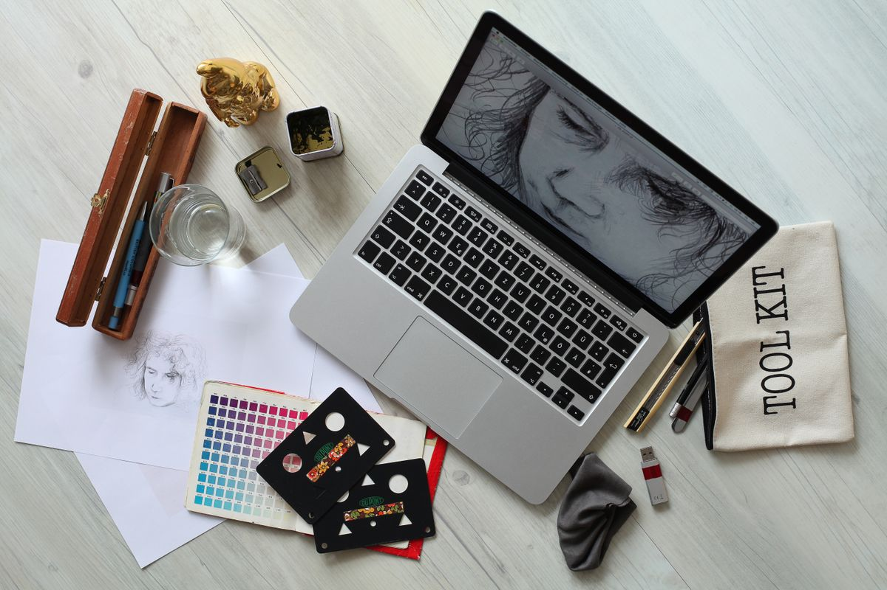
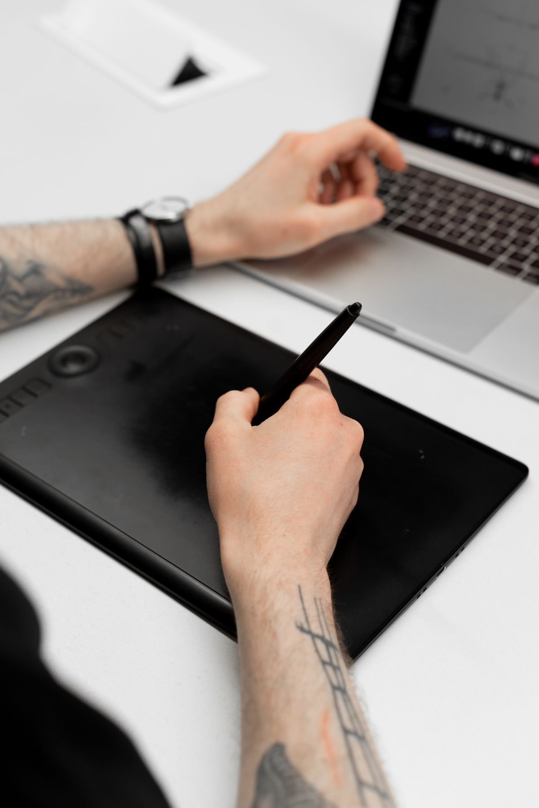

Banyak orang mengira Figma itu alat berbayar untuk desainer kantoran. Wajar, karena hasil desain yang dibuat di Figma memang terlihat rapi seperti buatan studio, dan nama Figma sering muncul di lowongan kerja UI/UX. Padahal kamu bisa memakai Figma tanpa membayar sepeser pun, langsung dari browser, tanpa install apa-apa. Paket gratisnya bukan demo singkat yang mati sesudah beberapa hari. Paket itu bernama Starter, dan per November 2026 statusnya tetap gratis, tanpa batas waktu. Artikel ini menjelaskan apa saja yang kamu dapat gratis, cara memulainya, dan di mana batasnya supaya kamu tidak kaget di tengah jalan.
Apa yang gratis di paket Starter
Paket Starter adalah paket gratis resmi Figma. Kamu cukup daftar dengan email atau akun Google, lalu langsung bisa membuat file desain. Tidak ada kartu kredit yang diminta, dan tidak ada masa trial yang tiba-tiba berakhir. Halaman harga resmi Figma menulis Starter seharga nol dolar, lengkap dengan draf tanpa batas, UI kit dan template, serta jatah kredit AI 150 per hari sampai 500 per bulan.
Yang dimaksud draf tanpa batas adalah file latihan dan percobaanmu. Kamu bisa membuat file sebanyak yang kamu mau selama file itu masih berstatus draf, alias belum dipindah ke folder tim. Di dalam draf kamu sudah bisa memakai alat inti Figma: frame, bentuk, teks, auto layout, komponen, dan prototipe interaktif. Hasilnya bisa diekspor ke PNG, JPG, atau PDF, jadi desainmu tidak terkunci di dalam Figma.
Satu hal lagi yang sering luput: siapa pun boleh melihat hasil desainmu tanpa bayar. Figma memberi akses penonton tanpa batas, jadi teman atau calon klien bisa membuka dan memberi komentar pada desainmu tanpa membeli kursi berbayar. Untuk pelajar yang sedang membangun portofolio, ini sudah lebih dari cukup.

Cara mulai memakai Figma gratis dalam satu sore
Caranya tidak ribet. Kamu tidak perlu mengunduh dan memasang aplikasi apa pun, karena Figma berjalan langsung di browser. Panel Layers ada di kiri dan panel Properties di kanan, jadi tata letaknya gampang ditebak walau kamu baru pertama kali membuka alat desain.
- Buka figma.com di browser laptop atau komputermu, lalu klik tombol Get started for free.
- Daftar dengan alamat email atau akun Google, lalu verifikasi akunmu.
- Di halaman file, klik New design file. Kanvas kosong langsung terbuka.
- Tekan F untuk membuat frame, lalu pilih ukuran layar HP atau desktop dari panel kanan.
- Tekan R untuk menggambar kotak, tekan T untuk menambah teks, lalu atur warna dan ukuran dari panel Properties di kanan.
- Coba buat satu layar sederhana, misalnya layar masuk aplikasi dengan logo, kolom email, kolom kata sandi, dan satu tombol.
- Kalau sudah selesai, klik Share untuk mengirim tautan ke teman, atau pilih frame lalu ekspor sebagai PNG dari panel kanan.
Satu sore cukup untuk sampai ke langkah terakhir. Kalau bingung di tengah jalan, salin salah satu template gratis yang disediakan Figma, lalu ubah isinya sesuai kebutuhanmu. Cara ini jauh lebih cepat daripada mulai dari kanvas kosong. Banyak desainer pemula belajar justru dengan membongkar template, lalu meniru susunannya untuk proyek sendiri.

Batasan paket gratis yang wajib kamu tahu
Gratis bukan berarti tanpa batas, dan Figma jujur soal ini. Batas yang paling terasa ada di folder tim: folder itu hanya menampung tiga file Figma Design atau Sites, tiga file FigJam, dan tiga file Slides. Drafmu tetap tanpa batas, tapi file yang sudah masuk folder tim dan dibagikan untuk dikerjakan bersama orang lain terhitung dalam jatah itu. Kalau proyek keempatmu butuh folder tim, kamu harus memindahkan atau menghapus file lama dulu.
Batas kedua adalah riwayat versi yang hanya tersimpan 30 hari. Kalau kamu baru sadar ada yang salah dari desain dua bulan lalu, versi lamanya sudah tidak bisa dikembalikan. Biasakan menyimpan salinan penting sebagai draf baru sebelum mengubah desain yang sudah jadi.
Batas ketiga menyangkut kerja tim. Paket Starter tidak menyediakan pustaka tim bersama dan Dev Mode untuk serah terima ke pengembang. Artinya tiap file membawa komponennya sendiri, dan pengembang yang membuka filemu mendapat info yang lebih terbatas. Selama kamu bekerja sendiri atau sekadar belajar, ketiga batas ini jarang terasa. Kursi berbayar Professional baru relevan ketika timmu butuh file bersama tanpa batas dan serah terima yang rapi. Harganya 16 dolar per bulan bila dibayar tahunan, menurut halaman harga resmi Figma.
Pelajar dan guru bisa dapat paket berbayar secara gratis
Kalau kamu masih pelajar atau guru, ada jalur gratis kedua yang lebih besar. Figma for Education memberi akses gratis ke paket Professional untuk pelajar dan pengajar yang status pendidikannya terverifikasi. Syaratnya kamu berada di kelas yang terstruktur dan mendaftar lewat email sekolah. Pelajar perguruan tinggi memverifikasi status lewat SheerID, dan masa aksesnya satu tahun untuk pelajar serta dua tahun untuk pengajar, sesudah itu bisa mendaftar ulang selama masih memenuhi syarat.
Jalur ini bukan jalan pintas untuk semua orang. Kalau kamu bukan pelajar atau pengajar, paket Starter tetap jalur gratis resmimu. Jangan tergoda memakai email sekolah orang lain atau memalsukan status, karena status pendidikan terikat pada email yang diverifikasi dan bisa dicabut bila email itu diganti.
Jadi, Figma memang alat profesional, tapi pintu masuknya gratis dan terbuka. Mulai dari paket Starter, buat satu layar sederhana hari ini, dan naik ke paket berbayar hanya kalau batas file atau kerja tim sudah benar-benar mengganggumu. Per November 2026, tidak ada alasan lagi menunda belajar desain hanya karena mengira alatnya mahal.
Sumber dan Info Resmi
Angka dan detail di artikel ini merujuk ke sumber berikut:
- Figma Pricing: paket Starter 0 dolar, draf tanpa batas, UI kit dan template, kredit AI 150 per hari sampai 500 per bulan, kursi Full Professional 16 dolar per bulan bila dibayar tahunan, riwayat versi 30 hari, penonton bisa melihat dan memberi komentar tanpa kursi berbayar.
- Dupple: folder tim Starter menampung 3 file Figma Design atau Sites, 3 file FigJam, dan 3 file Slides, draf tanpa batas, Starter tidak menyediakan pustaka tim bersama dan Dev Mode.
- Figma for Education: pelajar dan pengajar terverifikasi mendapat akses Figma gratis, jalur mandiri memberi akses ke paket Professional, syaratnya berada di kelas terstruktur dan mendaftar lewat email sekolah.
- Figma Help Center: pelajar dan pengajar perguruan tinggi, bootcamp, dan sekolah menengah mendapat paket Professional, verifikasi perguruan tinggi lewat SheerID, masa akses satu tahun untuk pelajar dan dua tahun untuk pengajar, bisa mendaftar ulang, status pendidikan terikat pada email yang diverifikasi dan dicabut bila email diganti.
- Erafone: Figma berjalan di browser tanpa install, daftar lewat email atau akun Google, panel Layers di kiri dan Properties di kanan, ekspor hasil ke JPG, PNG, atau PDF.
- Seriously Its AI: langkah membuat frame, teks, dan tombol untuk kartu promo, ekspor frame sebagai PNG, paket gratis mencakup draf tanpa batas dan prototipe interaktif.